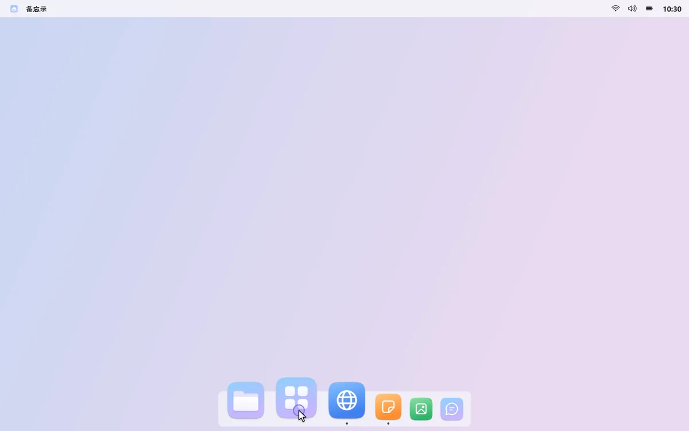
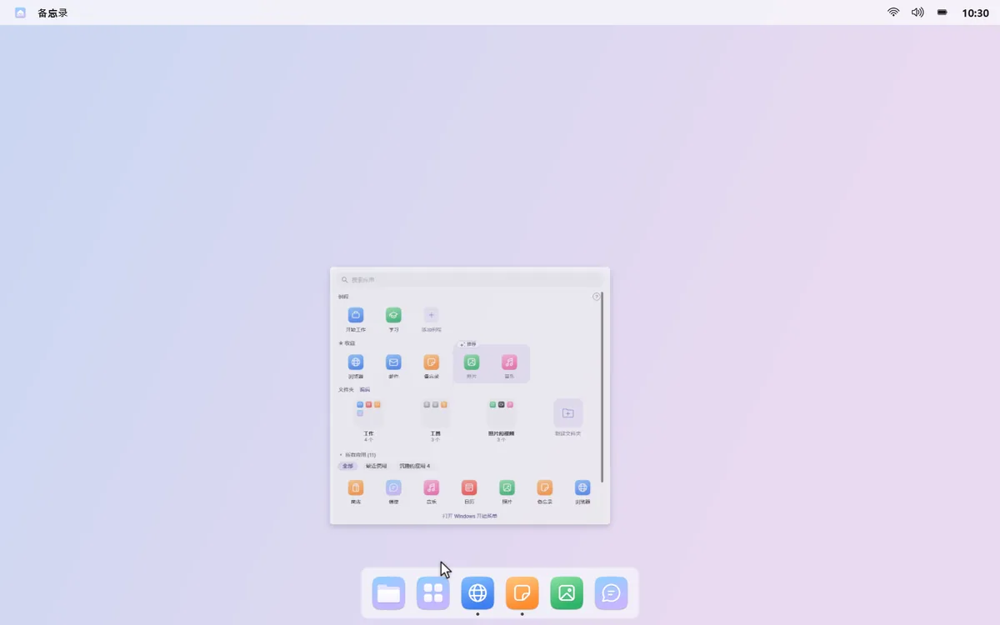
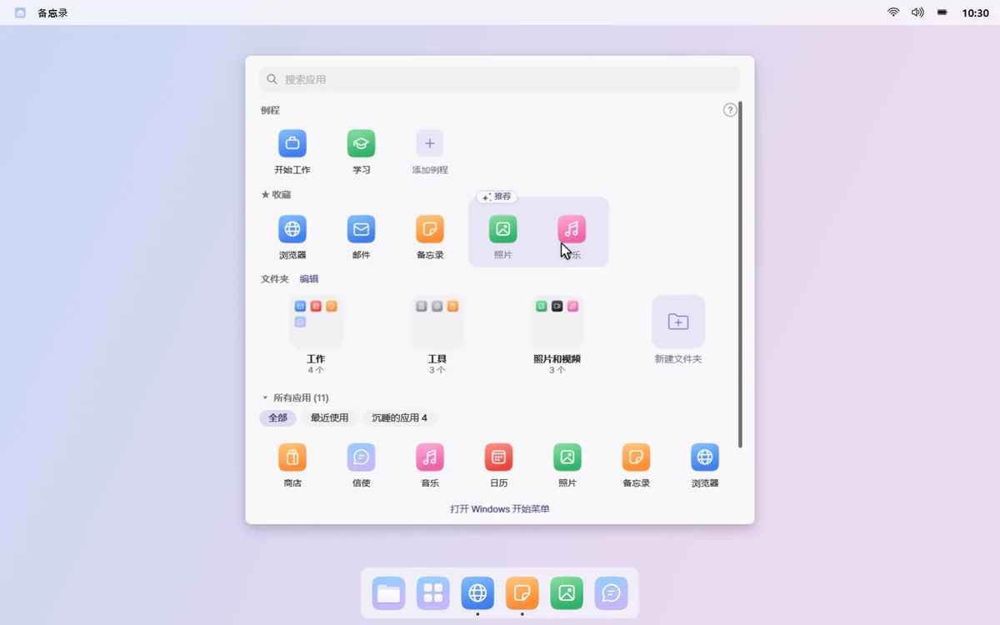
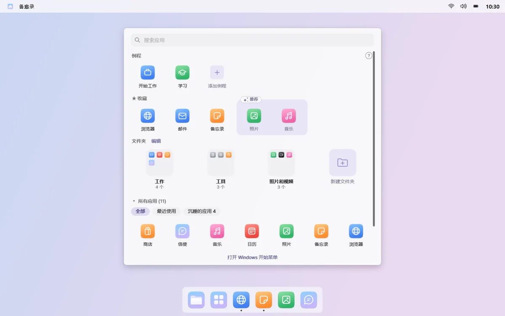
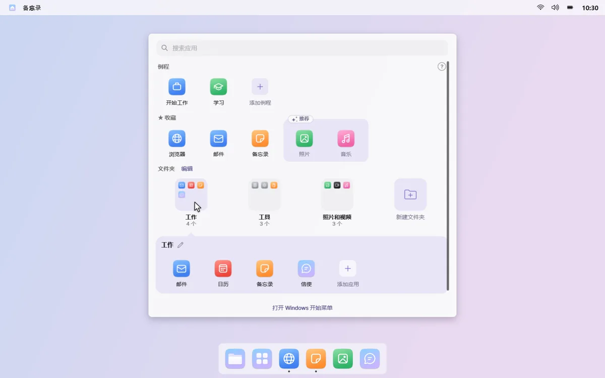
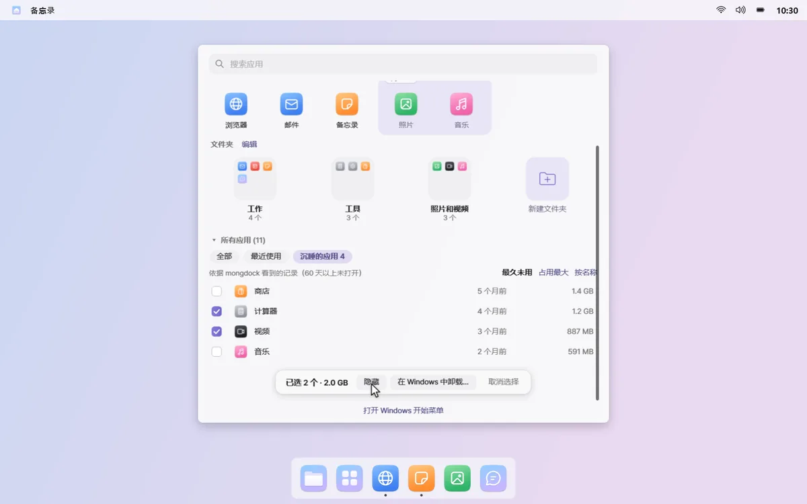

所有应用
常用的应用，放在眼前
点按程序坞中的“所有应用”，屏幕中央会打开一个面板。收藏、只装常用应用的文件夹和所有应用，都已整理好。
被遗忘的应用 · 装了一次就再没打开过的应用，越积越多。
01
一打开就能输入
面板不会占满整个屏幕，一打开就能在搜索框输入。最上面一行的例程，点一下就能打开。



02
收藏，外加几个推荐
把最常打开的应用固定到收藏行。最近常用的应用会以虚线框推荐出来，点按 + 即可加入收藏。

03
只装常用应用的文件夹
应用会按工作、沟通、游戏等分类放进文件夹，每个文件夹只放最近用过的应用。在编辑模式下，点一下就能重命名文件夹、调整顺序。

04
清理沉睡的应用
显示 60 天以上没打开过的“沉睡的应用”及其占用空间。可以在面板中隐藏，也可以选几个交给 Windows 卸载。

用于推荐和文件夹的应用使用记录只留在你的电脑上。右键点按面板空白处，关闭“记录常用应用”，即可停止记录并清除。 查看隐私政策
须知
- 卸载沉睡的应用时，会依次打开每个应用的 Windows 卸载程序。mongdock 本身不会删除任何东西，无法用这种方式卸载的应用会在列表中标出。